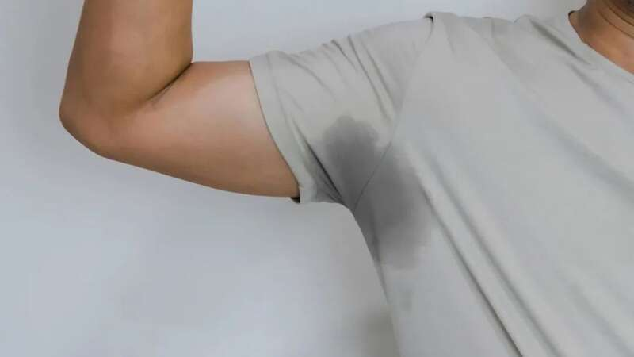
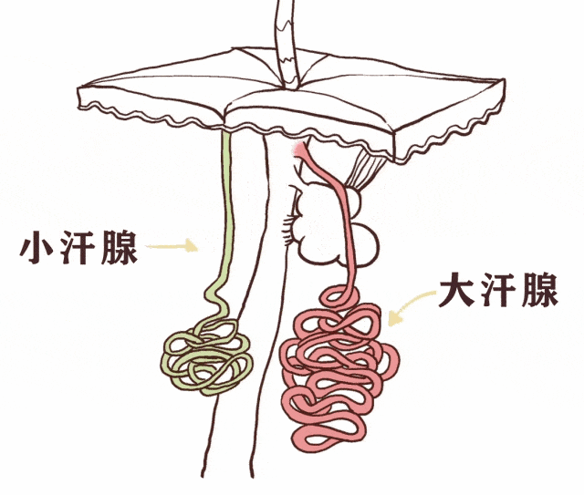
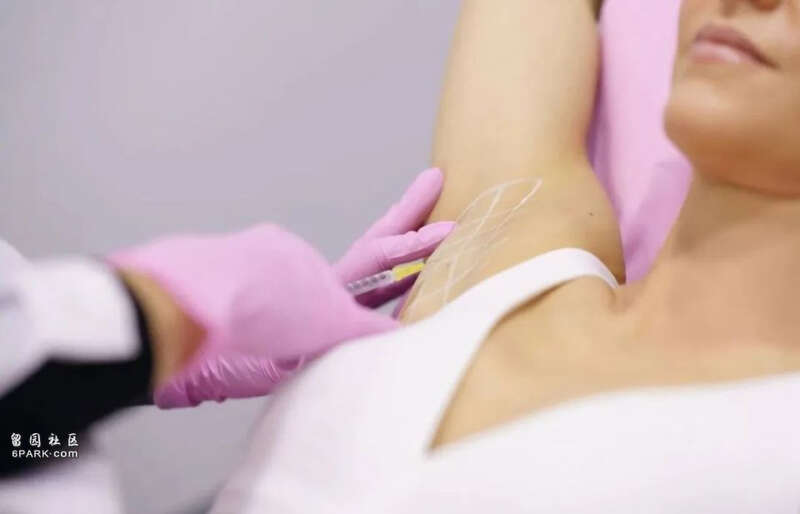
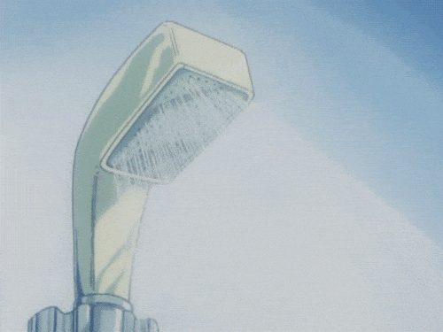

拥挤的车厢内、熙熙攘攘的人群里，总能闻到人们身上散发的各种体味。而最“上头”的，或许就是「腋臭」了。

腋下异味虽然不影响全身健康，但很多人会因此不敢抬起手臂，抵触近距离交流，甚至产生自卑心理，给生活造成一定困扰。
受访专家
复旦大学附属华山医院整形外科副主任医师 吴包金
腋下异味从何而来？
人体的汗腺分为小汗腺和大汗腺两种。小汗腺几乎遍布全身，排汗较稀，一般没有味道；大汗腺集中分布在腋下、胯下、乳晕、外耳道里，排出的汗液中含有各种蛋白质和脂肪酸。

大汗腺分泌物本身不臭，但分泌物被体表的细菌分解后，生成各种不饱和脂肪酸，就有了刺鼻的酸臭味。
在我国，平均每10个人中就有1人受到腋下多汗或异味困扰。腋臭是一种常染色体显性遗传疾病，有明显的遗传倾向，此外，以下几种原因也可能诱发腋臭。
新陈代谢：汗腺的发育受性激素影响，所以腋臭多在青春期发病，运动和天热导致汗腺过度分泌时最为明显。
个人卫生因素：不良的卫生习惯会给细菌滋生提供“温床”，易诱发腋臭。
精神因素：若精神压力过大，可能使内分泌系统异常，导致大汗腺分泌失调，进而引起腋下异味。
4种治疗手段各有利弊
理论上来说，医学手段不能完全清除全身所有汗腺，只能通过治疗减轻症状。因此严格意义上，腋臭可以局部根治，但不能彻底清除。常见的治疗手段有以下4种。
外用药物
目前市面上关于抑制腋臭、腋汗的外用药物种类繁多，是大部分人的首选。
优点：1.便捷。只需涂抹或喷于腋下，便可抑制异味的产生。2.安全。如因药物过敏产生腋下皮肤瘙痒、红肿、等反应，通常停药后可恢复。
缺点：1.长期使用可能产生耐药性，使得药效减弱。2.备孕期和哺乳期间禁用。3. 长期使用含铝成分的止汗剂有损身体健康。
注射治疗
注射治疗腋臭主要有硬化剂、无水酒精、肉毒毒素3种类型。
优点：无创、无恢复期。
缺点：1.无法彻底破坏大汗腺，疗效不持久，通常效果只能维持3~6个月。2. 肉毒毒素注射一般费用较高。

手术治疗
目前较为普及的两种手术治疗方式为微创腋臭手术和改良型小切口腋臭手术。
微创腋臭手术
切口控制在1厘米以内，通过特殊器械将大汗腺组织破坏掉的一种手术方式。
优点：瘢痕相对隐蔽，可以满足患者对于外观的需求。
缺点：大汗腺仍可能有残留，味道无法彻底清除，复发率高。
改良型小切口腋臭手术
结合了传统手术、小切口手术及微创手术各自的优点，尽可能地平衡了疗效与外观。
优点：改善率可高达98%，疗效保证，外观兼顾。
缺点：1.需要一定恢复期。2.短期内会有瘢痕、挛缩痕及色素沉着。3.对专科医生操作要求较高，技术难以在基层广泛普及。
无创治疗
无创治疗是通过非侵入式技术及微波加热原理，精准摧毁汗腺细胞，从而达到腋下止汗、净味的功效。
优点：1.不开刀，无疤痕。2.无恢复期，治疗结束后，第二天即可投入正常生活与工作中。一次治疗可达到除汗、除臭、除毛三个效果。
缺点：1.非根治性治疗手段，一次治疗可有效减轻80%~90%的出汗和异味症状。2.费用较其他治疗手段偏高。
日常护理做好3件事
有些人认为腋臭不是病，可治可不治，但它带来的心理负担可能超过很多疾病，并且影响日常生活和社交。其实，轻微的腋下异味，可以通过日常护理缓解。
保持个人卫生
勤洗澡，重点清洗腋下、腹股沟、肚脐等容易藏污纳垢的隐蔽部位。每天换洗衣物，尽量选择通透、轻薄、宽松的衣物，出汗后及时擦干。

饮食尽量清淡
少吃油炸食品、烧烤、洋葱、大蒜等油腻、辛辣刺激的食物，多吃蔬菜和水果。保持大便通畅，有利于体内毒素排出，从而减少汗液中毒素排出。
提高新陈代谢
多锻炼，增加身体新陈代谢速度，建议每周进行不少于150分钟的中等强度活动。
此外，不要总呆在室内，长期在空调房里会使汗腺功能退化，导致汗液得不到充分过滤，进而增加腋臭风险。▲